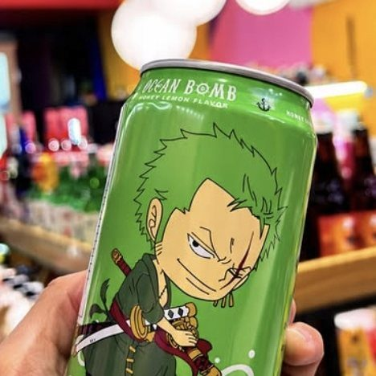

O mundo da Kuro Neko é o chão da própria loja: placa vermelha, trilho de prateleira, etiquetas POP e a plaquinha 営業中 na porta.
Esta página usa o mesmo CSS do site. Mude um token em assets/css/tokens.css e as duas páginas mudam juntas. A referência para máquinas está em DESIGN.md.
Marca
Redesenho vetorial provisório do logo do Instagram. Quando o arquivo original chegar, ele substitui este desenho; cores e regras continuam valendo.
Logo completo. Mínimo de 96px. Área livre ao redor: ¼ do diâmetro.
Selo (sem texto) para cabeçalho, rodapé e favicon: 64, 44, 32 e 16px.
Acordado: loja aberta
Dormindo: loja fechada
O gato do site acompanha o horário real. O contorno branco é obrigatório: deixa o gato legível no vermelho e no preto.
Cores
Vermelho, preto e branco, como nos posts da loja. O vermelho ocupa regiões inteiras (placa, trilho, bloco de contato), nunca pinga em detalhes.
Vermelho Placa--kn-red · #C8352FCampos da marca, trilho, texto vermelho. Branco por cima: 5,2:1.
Vermelho Gatinho--kn-red-logo · #D7433FSó o disco do logo e o 黒猫 decorativo. Não serve para texto (4,4:1).
Vermelho Lacre--kn-red-deep · #AD2318Links e texto vermelho pequeno. Sobre branco: 6,9:1.
Sombra do Trilho--kn-red-shade · #7E1A14A borda de baixo do trilho da prateleira.
Pelo--kn-ink · #1E1B20Texto, botão principal no cinza, placa fechada. Sobre o cinza: 15:1.
Fumaça--kn-ink-soft · #57525BTexto secundário. Sobre o cinza: 6,7:1.
Risco--kn-line · #D9D5D8Linhas, pontilhados e divisórias. Nunca texto.
Cinza Vitrine--kn-paper · #F2F0F1Fundo da página, o mesmo cinza dos posts.
Lâmpada--kn-lamp · #F4B400Só a luz da placa e do status quando a loja está aberta.
A regra do disco. O Vermelho Gatinho é do logo. Campos e textos usam o Vermelho Placa, que passa no contraste com branco.
A regra da lâmpada. O amarelo aparece em um único lugar: a luz acesa de “aberta”. Se estiver em outro lugar, sai.
Cor nunca sozinha. Aberto e fechado sempre vêm com palavra (Aberta, Fechada, Almoço) além da cor.
Tipografia
Anton é a voz de cartaz dos posts da loja: caixa‑alta, condensada, pesada. M PLUS 2 é uma gótica japonesa com latim legível; faz o texto corrido e também o kana e o kanji, então português e japonês ficam na mesma família. Todas as fontes ficam no próprio site.
DisplayAnton · clamp(3rem → 6rem) · 1.0
Cards, figures e sabores
HeadlineAnton · clamp(2.25rem → 3.75rem) · 1.0
Tem o que você procura?
TitleAnton · clamp(1.75rem → 2.25rem) · 1.0
Sabores da Ásia
LeadM PLUS 2 600 · 1.125 → 1.3125rem · 1.45
No Centro de Matão, em frente à ETEC.
BodyM PLUS 2 450 · 1.0625rem · 1.6 · até 62ch
No Japão, o gato preto é sinal de boa sorte. O nosso fica de olho na loja: quando ela fecha, ele fecha os olhos.
LabelM PLUS 2 800 · 0.8125rem · +0.06em · caixa‑alta
Endereço novo
JaponêsM PLUS 2 900 · tategaki (vertical) nas etiquetas
営業中 · 準備中 · カード · 冷凍食品
A regra do cartaz. Anton só em caixa‑alta e só em títulos, nomes de prateleira e endereço. Nunca em parágrafo.
Japonês é tempero. Todo kanji ou kana tem o equivalente em português visível por perto e fica oculto para leitor de tela.
Espaço e forma
Grade de 4px. Grupos colados, seções bem separadas, mais espaço acima de um título do que abaixo.
--space-1 · 4px
--space-2 · 8px
--space-3 · 12px
--space-4 · 16px
--space-5 · 24px
--space-6 · 32px
--space-7 · 48px
--space-8 · 64px
--space-9 · 96px
--radius-label · 2px
Etiquetas, tags, recibo. Papel cortado.
--radius-control · 6px
Botões, mapa, placa grande.
--radius-round
Só o disco do logo, a lâmpada e os furos da placa.
Margem lateral fluida --gutter de 16 a 40px. Conteúdo até 76rem. Alvos de toque com no mínimo 44px (--tap); botões têm 48px.
Profundidade e movimento
Nada flutua. Etiquetas e placa estão penduradas, então a sombra cai para baixo, curta e macia. Botões não têm sombra: afundam 1px quando pressionados.
--shadow-label
Etiqueta POP pendurada no trilho.
--shadow-plaque
Placa da porta.
Tokens de movimento
Token
Valor
Uso
--dur-instant
120ms
Botão afundando
--dur-quick
220ms
Cor de hover, seta do link
--dur-move
420ms
Etiqueta endireitando, barra de atalhos
--ease-out
cubic-bezier(0.16, 1, 0.3, 1)
Toda chegada
kn-swing
1300ms
A placa balança no prego quando o status chega
kn-flip
520ms
A placa vira de 営業中 para 準備中 quando o horário muda
営業中Aberta
Com “reduzir movimento” ligado no aparelho, a placa não balança nem gira: só troca de lado. A informação continua igual.
Componentes
Botões
O texto diz a ação: “Como chegar”, “Copiar endereço”. Um botão principal por área. Ícone à esquerda, sempre desenhado no mesmo traço de 2px.
Principal no cinza: fundo Pelo, texto branco. No vermelho: fundo Etiqueta, texto Pelo.
Secundário: contorno de 2px na cor do texto ao redor.
Hover: o principal fica vermelho; no vermelho, o principal fica preto. Pressionado: desce 1px. Foco: contorno de 3px com 3px de folga (branco sobre vermelho).
Concluído: troca ícone e texto (“Endereço copiado”) e avisa o leitor de tela.
HTML
<a class="kn-btn" href="…"><svg aria-hidden="true"><use href="#i-route"/></svg>Como chegar</a>
<a class="kn-btn kn-btn--line" href="…">…</a>
<!-- sobre vermelho: envolva com .on-brand e use kn-btn--label -->
Placa da porta
A placa que as lojas japonesas penduram na porta. Aqui ela lê o horário real de São Paulo e mostra um de quatro lados.
営業中Aberta
Aberta · 営業中 eigyō‑chū
準備中Almoço
Almoço · 13:30 às 14:30
準備中Fechada
Fechada · 準備中 junbi‑chū
定休日Fechada
Folga · 定休日 teikyū‑bi, domingo
Aberta agora · fecha às 13h30 para o almoço
Aberta agora · fecha em 20 min
Fechada para o almoço · volta às 14h30
Fechada agora · abre segunda às 9h
Aberta: placa branca, kanji vermelho, lâmpada acesa. Fechada: placa preta, texto branco, lâmpada apagada (só o contorno).
A frase de status sempre acompanha a placa e diz o próximo horário. Faltando 30 min ou menos, conta os minutos.
Horário em frase: “9h”, “13h30”. Horário em tabela: “09:00–13:30”.
Teste qualquer momento com ?agora=2026-11-03T13:45 na URL do site.
Trilho e etiqueta POP
A borda vermelha da prateleira com a etiqueta presa por um clipe. Cada etiqueta tem um nome em Anton, uma frase concreta, o nome em japonês na vertical e uma ação.
Cards
Pokémon TCG: boosters japoneses, pré‑vendas e cartas avulsas.
Cupom de konbini com borda serrilhada. É uma tabela de verdade: dia, manhã e tarde. O dia de hoje ganha a marca vermelha e a etiqueta “hoje”.
Kuro Neko営業時間
Exemplo de horário
Dia
Manhã
Tarde
Sex 金
09:00–13:30
14:30–18:00
Sáb 土
09:00–13:30
14:30–18:00
Dom 日
Fechado
Nota de rodapé: o que muda o horário e onde avisar.
Endereço e referência
Rua em Anton, bairro e cidade em texto, e a referência que todo mundo conhece em uma tag vermelha. Sempre com rota no Google Maps, Waze e “Copiar endereço”.
Rua Cesário Motta, 631Centro · Matão‑SPEm frente à ETEC
Foto da loja
Só fotos reais do Instagram da loja, em 4:5, com legenda que diz o produto. Nada de banco de imagem.

Ocean Bomb mel e limãoNa lata do Zoro, de One Piece.
Barra de atalhos (celular)
Aparece embaixo, no alcance do polegar, quando os botões do topo saem da tela. Some no rodapé e no computador. Só duas ações: chegar e conversar.
Voz e texto
A voz dos posts: curta, calorosa, direta. Toda frase entrega um fato, uma ação ou um pedaço da personalidade da loja.
Escreva assim
“Como chegar”, “Copiar endereço”, “Perguntar o que tem hoje”
“Aberta agora · fecha às 13h30 para o almoço”
“Lay’s chinesa, sabor lámen apimentado”
“O estoque muda rápido. Pergunte antes de sair de casa.”
Evite
“Saiba mais”, “Clique aqui”, “Confira”
“Horário de funcionamento: consulte”
“Produtos incríveis de alta qualidade”
Números, preços ou depoimentos que a loja não confirmou
Regras
Faça
Responda “posso ir agora?” no primeiro olhar: placa, frase de status e endereço no topo.
Pinte regiões inteiras de Vermelho Placa e deixe o resto no Cinza Vitrine.
Pendure as etiquetas num trilho. Elas não flutuam soltas na página.
Use as cores dos tokens e passe no contraste AA: texto 4,5:1, título grande 3:1.
Leve o japonês com o português do lado, e marque o japonês com lang="ja".
Não faça
Fundo escuro com neon, partículas de sakura ou kanji espalhado como enfeite.
Grade de cards iguais com ícone, título e texto.
Texto em degradê, vidro desfocado ou sombra dura deslocada.
Raios de sol nascente ou qualquer símbolo militar japonês como enfeite.
Emoji no lugar de ícone. Os ícones são desenhados, traço de 2px.